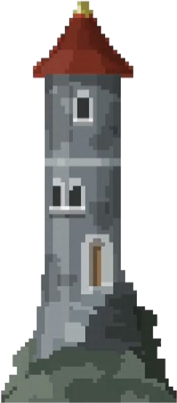
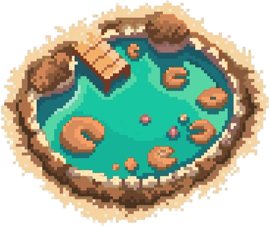
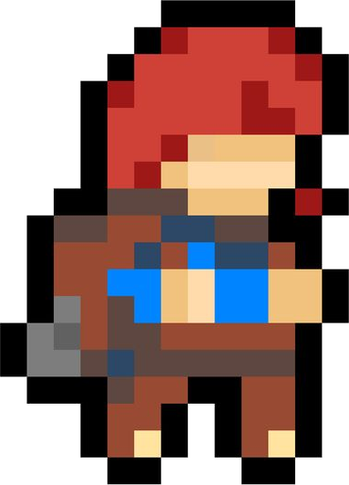
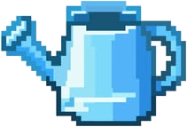
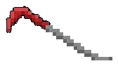

Como jogar: recupere a floresta plantando e cuidando das árvores. O jogo fica pausado enquanto este tutorial estiver aberto.
Alcance 60% de reflorestamento para concluir. No modo fácil, a meta passa a 10%.
Você atingiu a meta de reflorestamento e concluiu o jogo.